{kind=link}
{kind=link}
This song had many iterations. I reworked it so much that the first version is a distant memory compared to the final. It was a lot of fun to develop the melody and experiment with the different tracks.
{kind=link}
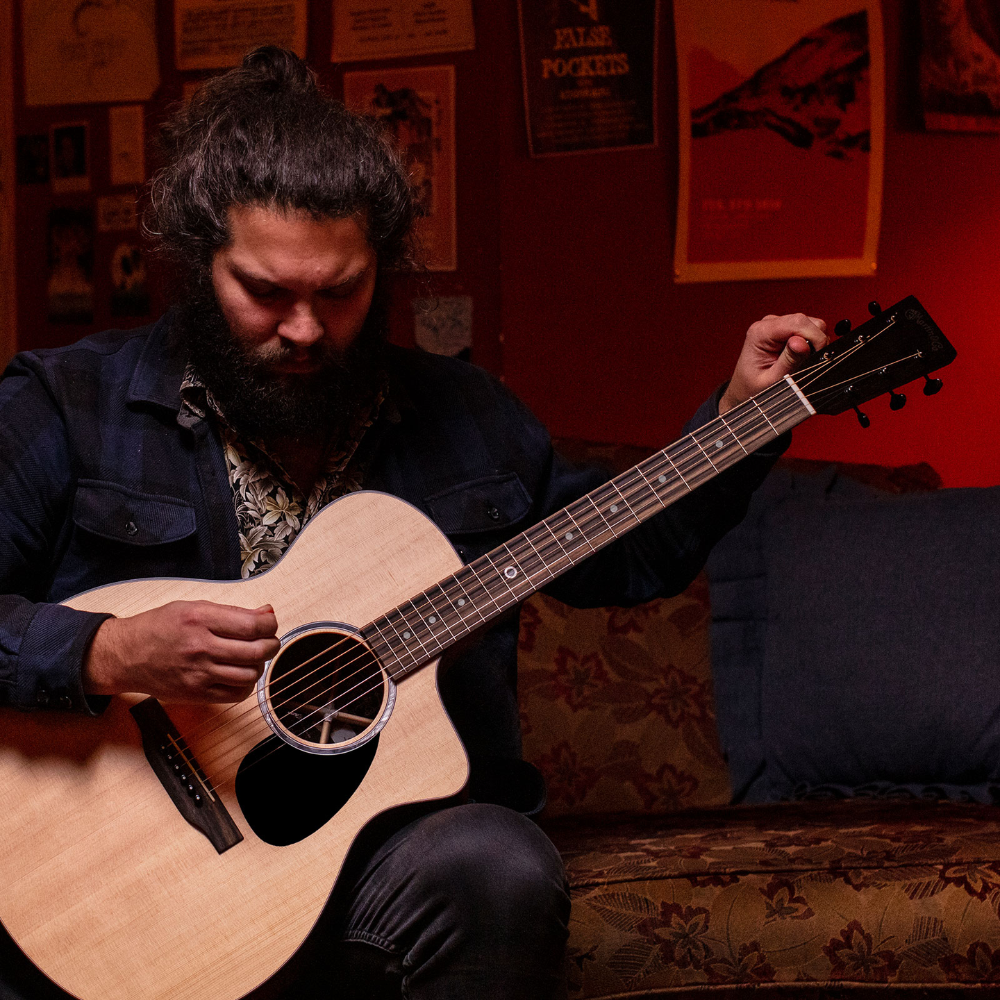
AOR is alive! For my third pop/rock album, I chose to explore the uplifting power of positivity. The songs delve into the transformative nature of love, even in the face of adversity, and the discovery of inner strength through various forms of connection.
So, grab your best headphones or crank up your stereo, hit play, and immerse yourself in my music.
If you prefer, you can use
Spotify instead of Youtube.
You can also buy my albums on
Amazon.
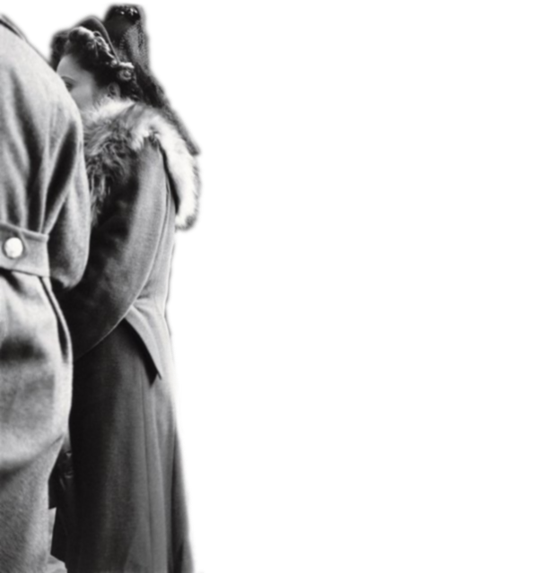
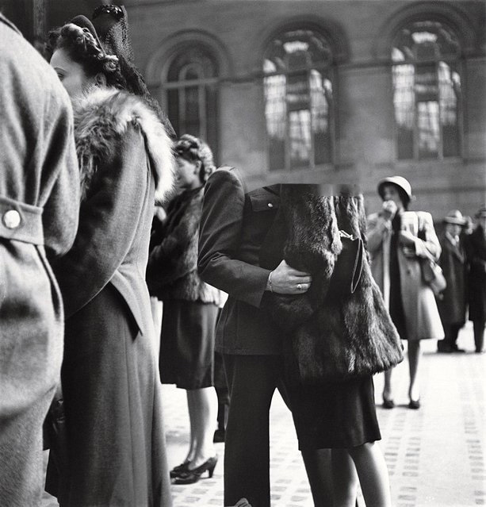
After all this time, the truth so bare
Lonely echoes whisper, please repair
One day I hope all this pain will change
Or maybe things will be the same
I'm not sure my poor heart survives
But I believe my love will still hold tight
I can wait forever
but we know it would be wrong
This love, a final swan song
I can wait forever
But the light is almost gone
Old melody lingers on
I can still wait forever

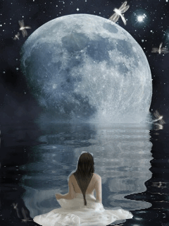
She is my little girl
She is my whole world
Looking through my Father's eyes
It's my turn to realise
My girl is made from love
Like angels in Heaven above
My girl is made from love
Till the day when I am gone
All I want to have my beautiful girl with me
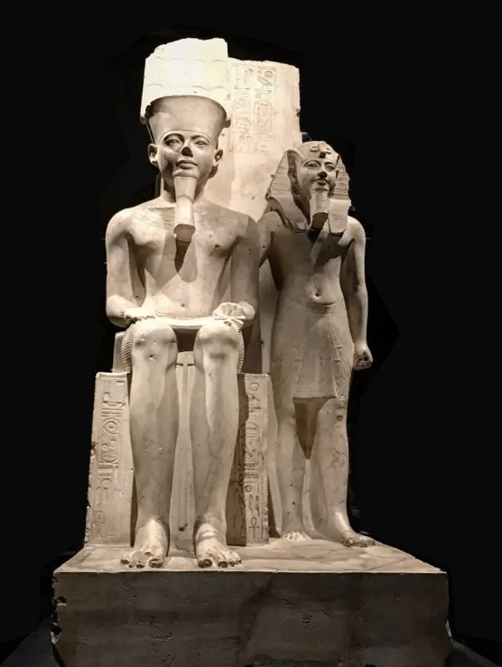
I know
love will be there
to find me right here
where I have always belonged
Love will always win
I feel it deep within
but I just can't wait anymore
I know love will be there
It's written plainly everywhere
I know love will be there
Love would find me now
if I just could read the signs
Not too many years ago
Thought she would be the one
Our bond was strong
Our dream of lasting love
A house and a child
But then, it was gone
I fell deeper and deeper
Still my hope was alive
Year after year I have finally healed me
Those memories got me through, I'm ready for love again
When love left me out
I said I'm coming back to feel it once again
When doubt filled my heart
I buried it all aside, a new time starts inside
And I will find love again
When you are out there walking alone
I'm there with you
When you can't find your home
When you need a guiding hand
Someone to understand
I will take you home tonight
If you start believing in me
When you think it's over I will be your man
When the nights get colder I will be your man
When you need a shoulder I will be your man
There's a lady looking through the window
sitting at the table waiting for me
Her eyes are fixed on something distant
What a beautiful thing for a man to see
As the rain keeps falling down my heart is turning around for the scene
And time is slowing down freezing me to the ground. I can't believe
When you meet someone you love
at the very first sight
You can feel it your heart
It's a miracle and right
When you meet someone you love
it fills your heart forever
and then you will know
if it's love
when you meet the right one
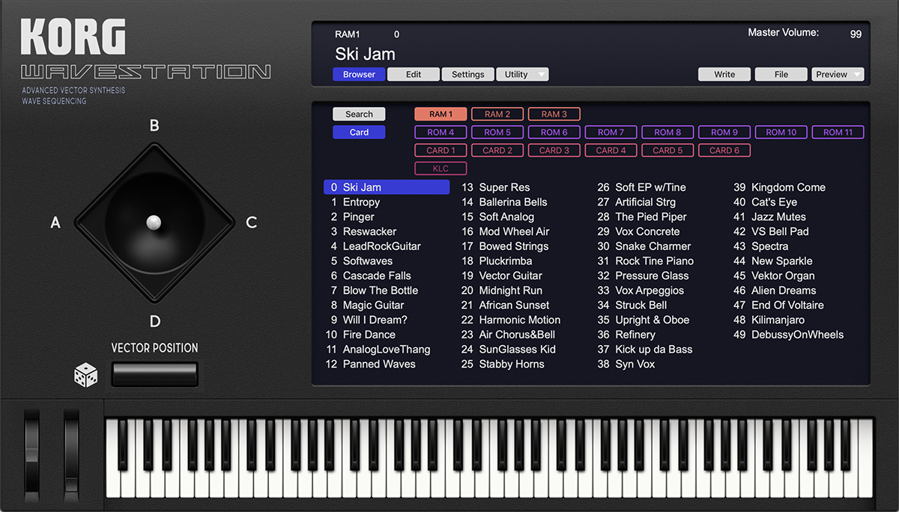
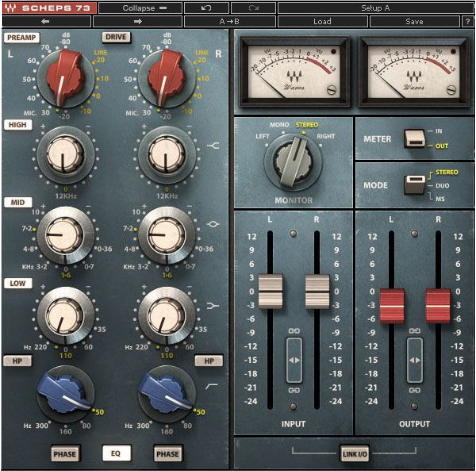
I'm as ready as I'll ever be
I would give it all for an you and me
You've been waiting for this all the time
I'm sorry I didn't make up my mind
All I want to do is to make you happy in your life
I can give you everything and more
Now I'm ready to make my promises to you
I'm ready to see this whole thing through
Yes I'm ready to make my promises to you
I'm ready to spend my life with you
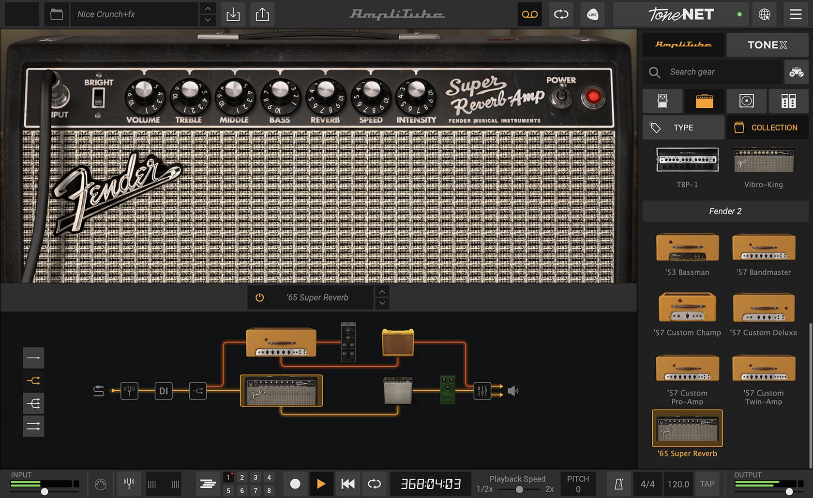
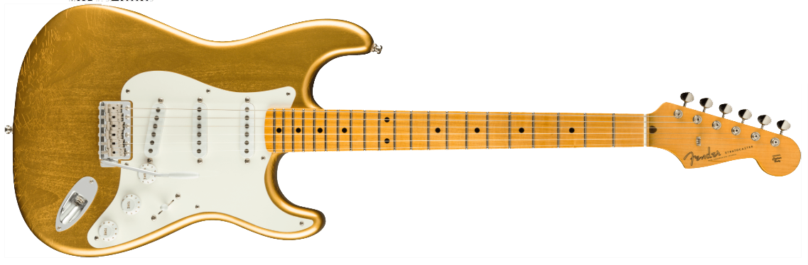
My silent, aching love cries out your name,
A secret song my heart can't sing the sa me.
A story locked away, unheard, unspoken,
A fire burning bright, a love unbroken.
Maybe someday, my words will find their only way,
Maybe someday, courage chases doubt away,
This unspoken melody
a silent symphony
Aching harmony
I can't sing it anymore
True to my artistic vision and musical preferences, I arranged the songs myself, totally avoiding current trends. On this project, I played keyboards, guitars, and bass, and even sang backing vocals. I took on every single role, from composing and arranging to writing lyrics, recording, producing, mixing, and mastering. This time, it was a completely solo effort.
This has been a labor of love that spanned several years (2018-2025). I began working on the album shortly after completing my first one, and it required significant time and effort to refine the songs to their final form. A unique feature of this album is the use of AI to enhance the lyrics and vocal tracks. While I sang all the vocals, the main vocal tracks' timbre has been significantly altered through AI processing using the Replay app. I programmed some custom AI models that fit the songs and my voice the best.
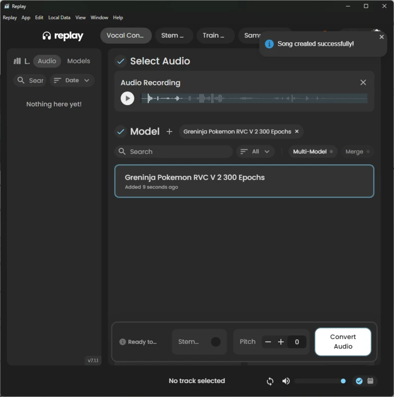
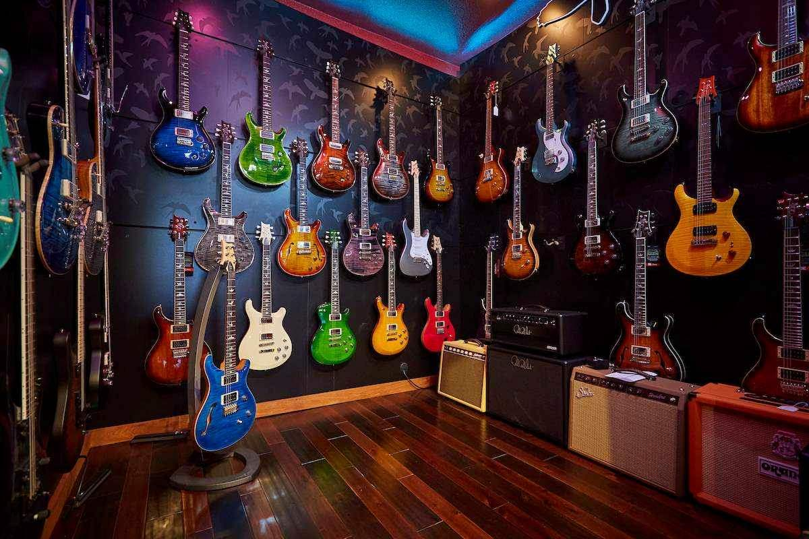
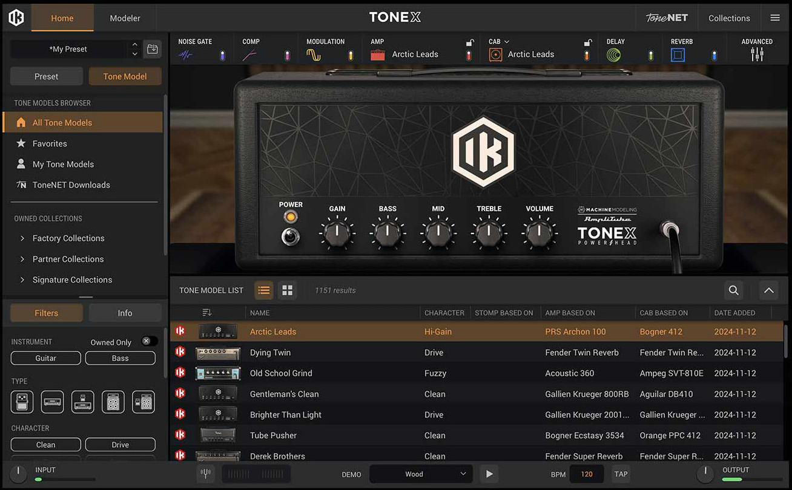
I use the IK Multimedia Tonex and Amplitube applications for my guitar and bass sounds. Though I have great tube amps, I prefer digital modeling in song production for its versatilty.
I have listened to the songs many many times in my car while doing the production. And it must have taken over 20 hours per song to develop them to decent shape. All this just for fun! I must be nuts!
{kind=link}
{kind=link}
{kind=link}
{kind=link}
{kind=link}
{kind=link}
{kind=link}
{kind=link}
{kind=link}